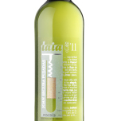
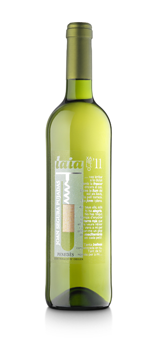
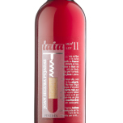
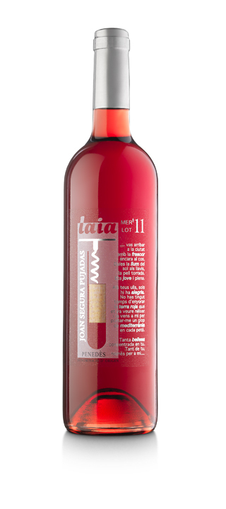
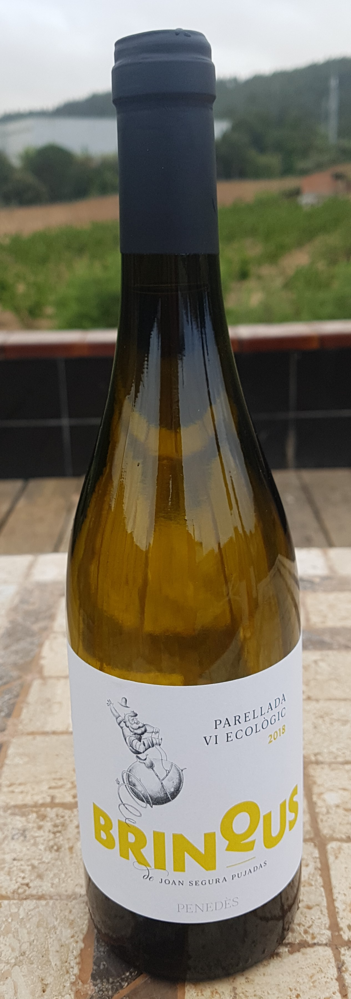
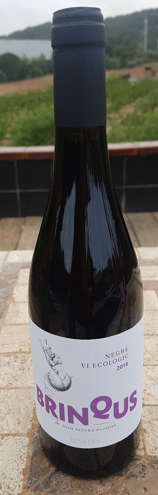
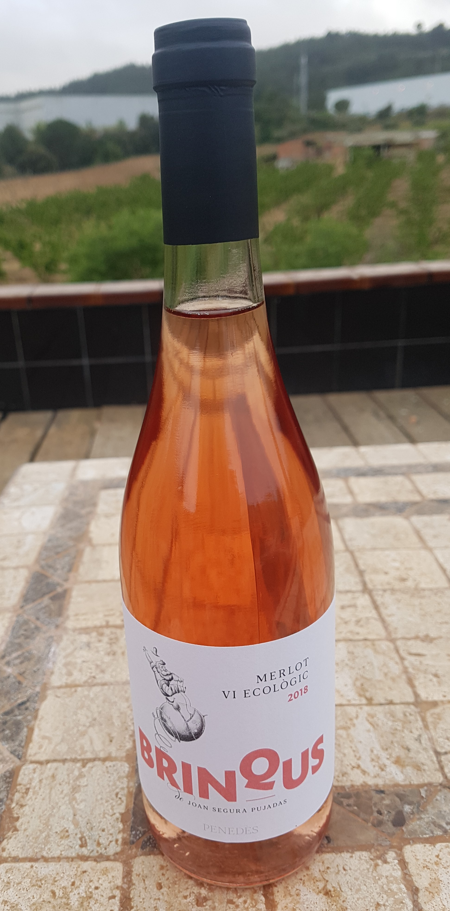
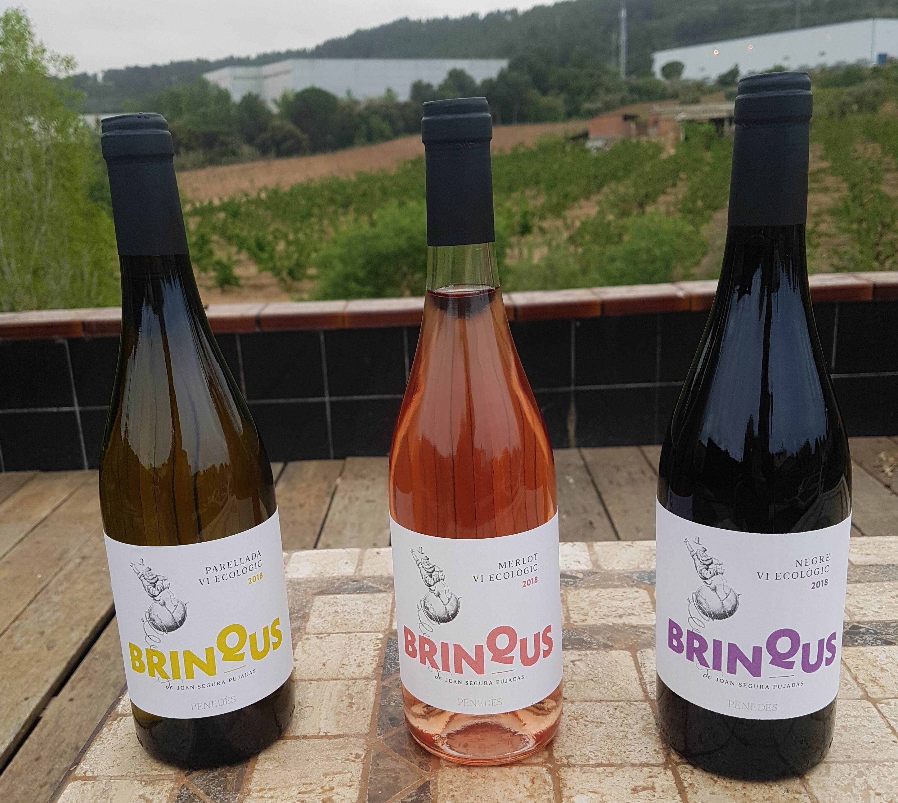

Vi blanc monovarietal 100% Xarel·lo. El most l’obtenim desprès d’una suau maceració amb les pells per poder obtenir els valuosos precursors aromàtics, i tot seguit realitzem la vinificació a baixa temperatura. Un cop realitzat el vi el mantindrem amb les mares realitzant “batonaige” per aportar volum i untuositat al producte final.
Vi blanc, de color groc pàl·lid amb lluentons verdes pròpies de la seva joventut, al nas la finor de la fruita sobresurt per damunt de qualsevol altre aroma, destacant la dolçor del meló galià, el perfum del préssec madur i la frescor de la pera llimonera. En la boca ens trobem els mateixos matisos afruitats que ens hem trobat al nas, destacant el gras i avellotat del tacte, i una llarga i fresca persistència Un vi que invita a ser consumit, i que no cansa, ideal per tot tipus de plats de peix i marisc.
 Vi rosat monovarietal 100% Merlot, raïm sangrat sense pressió per obtenir un most d’altíssima qualitat i concentració d’aromes. La maduració del raïm ha estat controlada des del departament de viticultura dia a dia per poder veremar la matèria prima en el moment òptim i així obtenir aquest producte.
Vi rosat ecològic, de bonic i brillant color vermell rubí, amb pinzellades blavoses, al nas apareixen notes intenses de fruits vermells on destaquen la cirera i la maduixa, tot embolcallat amb unes notes cremoses i llamineres que ens inciten a tastar-lo. En la boca ens hi tornem a trobar les notes abans descrites, que ens recorden un plat amb cireres i maduixes amb nata, on cal destacar la persistència gustativa que ens resta desprès de fer el glop. Un vi ideal per acompanyar tot tipus de plats.
 Blanc jove, color pàl·lid amb ribers verds. Nota de fruita verdes, poma i pera. Bon pas per boca, no te puntes. Deixa la boca fresca. Es elegant i persistent. Es un parellada de la finca La Torreta de Mediona a més de 500 metres d'altura.
Color cirera amb ribers violacis amb molta llàgrima en copa. En nas en recorda fruites vermelles, madures i dolces. En boca es cremós i sense puntes i cert volum i deixa notes de pega dolça.
Es un vi afruitat, de color pàl·lid, de la varietat merlot. Es nascut a Mediona, a la vinya de la Font de la Torreta. El pas en boca es suau i elegant. Amb nas destacant les fruites vermelles. En boca es golós i agradable. Fruit de la lleugera maceració en fred.
